User’s Hardware Manual_V1.0
Document classification: □ Top secret □ Secret □ Internal information ■ Open
Copyright Notice
The copyright of this manual belongs to Baoding Folinx Embedded Technology Co., Ltd. Without the written permission of our company, no organizations or individuals have the right to copy, distribute, or reproduce any part of this manual in any form, and violators will be held legally responsible.
Forlinx adheres to copyrights of all graphics and texts used in all publications in original or license-free forms.
The drivers and utilities used for the components are subject to the copyrights of the respective manufacturers. The license conditions of the respective manufacturer are to be adhered to. Related license expenses for the operating system and applications should be calculated/declared separately by the related party or its representatives.
Revision History
Date |
Manual Version |
SoM Version |
Carrier Board Version |
Revision History |
|---|---|---|---|---|
10/12/2024 |
V1.0 |
V1.0 |
V1.1 and Above |
Initial Version |
Application Scope
This manual is mainly applicable to the Forlinx OK-MA35-S21 platform. Other platforms can also refer to it, but there will be differences between different platforms. Please make modifications according to the actual conditions.
Overview
This manual is designed to help you quickly familiarize yourselves with the product, understand interface functions and configuration, and primarily discusses the interface functions of the development board, interface introductions, product power consumption, and troubleshooting issues that may arise during use. Some commands were commented to make it easier for you to understand (adequate and practical for the purpose). For information on pin function multiplexing, hardware troubleshooting methods, etc., please refer to Forlinx’s “OK-MA35-S21 Pin Multiplexing Comparison Table” and “OK-MA35-S21 Design Guide.”
There are total four chapters:
Chapter 1. is CPU overview, briefly introducing its performance and applications;
Chapter 2. is comprehensive introduction to the SoM, including connector pins explanations and function introductions;
Chapter 3. is comprehensive introduction to the development board, divided into multiple chapters, including both hardware principles and simple design ideas;
Chapter 4. mainly describes the board’s power consumption performance and other considerations.
A description of some of the symbols and formats in the manual:
Format |
Meaning |
|---|---|
Note |
Note or information that requires special attention, be sure to read carefully |
📚 |
Relevant notes on the test chapters |
🛤️ |
Indicates the related path |
1. MA35D1 Description
NuMicro MA35D1 series is a high-end heterogeneous multi-core microprocessor from Nuvoton for industrial control and edge gateways. It is based on dual 64-bit ARM Cortex-A35 cores up to 1GHz and a 180MHz ARM Cortex-M4 core designed to meet Tiny AI/ML edge computing.
The MA35D1 series supports 16-bit DDR2/ DDR3 and DDR3L SDRAM.
MA35D1 series is a trusted system that meets the security requirements of IoT products. It includes advanced security mechanisms such as Nuvoton TSI (Trusted Secure Island), an independent secure hardware unit, TrustZone, secure boot, tamper detection, built-in AES, SHA, ECC, RSA, and SM2/3/4 encryption/decryption accelerators, a true random number generator (TRNG), and key storage (Key Store) and one-time programmable memory (OTP memory). All security-related operations are performed in the TSI, protecting sensitive and high-value data. These security features can also meet the users’ requirements for IEC 62443 certification.
To meet the needs of high - end Edge IIoT Gateways, the MA35D1 series integrates PDMA, which can directly access the system memory without CPU intervention, thereby enhancing the system performance. Meanwhile, the MA35D1 series offers multiple sets of advanced and high - speed communication interfaces, such as Gigabit Ethernet, SDIO3.0, high - speed USB 2.0, CAN FD, etc., which can be applied to high - end Edge Gateways and new energy applications.
For human interface applications, the MA35D1 series offers an LCD display controller with a resolution of 1920 X 1080 at 60 frames per second, a 2D graphics accelerator, JPEG and H.264 decoders, etc., for better graphical human interface effects and video playback.
MA35D1 Processor Block Diagram
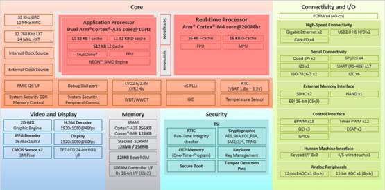
2. FET-MA35-S2 SoM Description
2.1 FET-MA35-S2 SoM Appearance
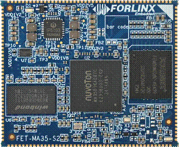
Front
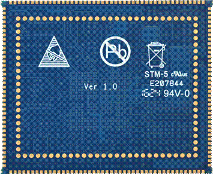
Back
2.2 FET-MA35-S2 SoM Dimension Diagram
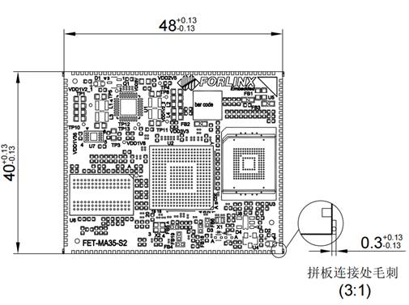
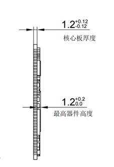
Structure size: 48mm × 40mm, dimensional tolerance ± 0.13mm, refer to DXF file for more dimensional information.
Plate making process: 1.2mm thickness, 12-layer immersion gold PCB.
SoM uses edge connector +LGA packaging, with a total of 260 pins led out. The center - to - center spacing of the edging connecting pins is 1 mm, and the size of each individual pin is 1.4 * 0.6 mm. The ball pitch of the LGA is 1.5 mm, and the diameter of each individual ball is 1 mm.
Refer to Appendix for the connector packaging diagram.
2.3 Performance Parameters
2.3.1 System Main Frequency
Name |
Specification |
Description |
|||
|---|---|---|---|---|---|
Minimum |
Typical |
Maximum |
Unit |
||
Main Frequency |
— |
800 |
800 |
MHz |
— |
RTC clock |
— |
32.768 |
— |
KHz |
— |
2.3.2 Power Parameter
Parameter |
Pin Number |
Specification |
Description |
|||
|---|---|---|---|---|---|---|
Minimum |
Typical |
Maximum |
Unit |
|||
Main Power Supply Voltage |
VSYS |
4.5 |
5 |
5.5 |
V |
— |
No-load current |
— |
442 |
mA |
See Appendix Power Consumption Table |
||
High-load current |
— |
512 |
mA |
See Appendix Power Consumption Table |
2.3.3 Operating Environment
Parameter Description |
Specification |
Description |
||||
|---|---|---|---|---|---|---|
Minimum |
Typical |
Maximum |
Unit |
|||
|
Storage Environment |
-40 |
25 |
+125 |
℃ |
|
Operating Environment |
-40 |
25 |
+85 |
℃ |
Industrial-grade |
|
Storage Environment |
-40 |
25 |
+125 |
℃ |
||
Humidity |
Operating Environment |
10 |
— |
90 |
％RH |
No condensation |
Storage Environment |
5 |
— |
95 |
％RH |
2.4 SoM Interface Speed
Function |
Quantity |
Parameter |
|---|---|---|
USB 2.0 |
2 |
1 x USB2.0 Host, 1 x USB 2.0 OTG |
RGB |
≤1 |
RGB888 support, resolution up to 1920*1080 |
CSI |
≤2 |
Supports up to 3m pixels |
Ethernet |
≤2 |
10/100/1000 Mbit/s Ethernet, RGMII and RMII support |
UART |
≤17 |
Baud rate up to 9.5Mbps |
ISO7816 |
≤2 |
ISO-7816-3 support |
QSPI |
≤2 |
Configurable master-slave mode, clock up to100MHz |
SPI |
≤4 |
Configurable master-slave mode, clock up to100MHz |
I2S |
≤2 |
Supports both master and slave mode |
I2C |
≤5 |
Supports 7bits and 10bits address modes up to 1 Mbit/s |
CANFD |
≤4 |
Supports CAN-FD V1.0 and CAN2.0 A/B； |
EPWM |
≤18 |
Supports up to 18 channels of EPWM |
SDIO |
≤1 |
SD0，4-bit， only support 3.3V |
ADC |
≤8 |
8 x single-ended inputs, 12 bit, 500K SPS, 4-wire or 5-wire touch |
EADC |
≤8 |
8 x single-ended or 4 x differential inputs, 12 bit, 4.7 M SPS |
Note：
The parameters in the table are the theoretical values of hardware design or CPU;
The quantity is marked as the maximum.
2.5 FET-MA35-S2 SoM Pins Definition
2.5.1 FET-MA35-S2 SoM Pins Schematic
（ SoM Pins Schematic）
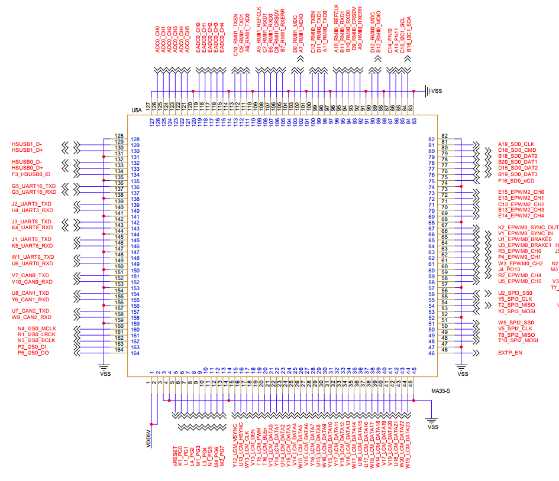
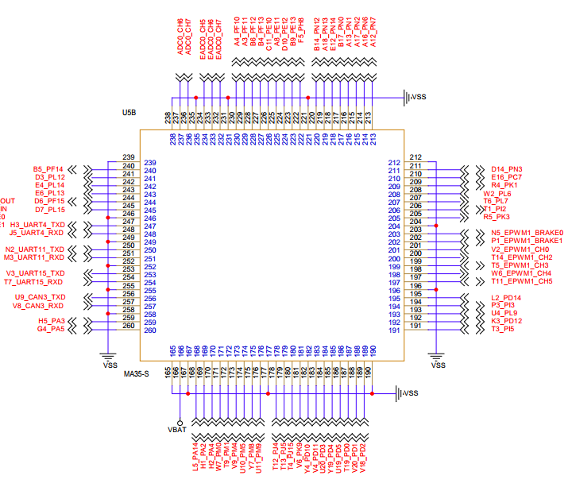
2.5.2 FET-MA35-S2 SoM Pins Description
When users have multiple functional expansion requirements, they can refer to the user guide “FET-MA35-S2 Pin Multiplexing Table”. However, for more detailed information, it is recommended to consult relevant documents, the chip datasheet, and the reference manual.
2.6 SoM Hardware Design Description
Power Pin
Function |
Signal Name |
I/O |
Default Function |
Pin Number |
|---|---|---|---|---|
Power |
VDD5V |
Power Input |
The power supply pin for the SoM is 5V, and the carrier board provides a current of no less than 2.5A. |
1.2 |
VBAT |
Power Input |
SoM RTC power supply 3V |
166 |
|
GND |
Ground |
SoM power ground and signal ground, all GND pins need to be connected |
Function Control Pin
Function |
Signal Name |
I/O |
Default Function |
Pin Number |
|---|---|---|---|---|
CPU reset |
nRESET |
I |
SoM power reset, active low, users should not add additional capacitive loads on this pin, so as not to affect the normal startup of the SoM. |
5 |
Power enable |
EXTP_EN |
O |
Enable signal to control the external power supply of the carrier board, output from the SoM, 3.3V level |
46 |
BOOT mode selection |
K1_PG0/L1_PG1/L4_PG2/M1_PG3 L3_PG4/N1_PG5/M4_PG6/M2_PG7 |
I |
SoM boot option. When the carrier board is not processed, the SoM is booted from the emmc by default. |
6,7,8,9 10,11,12,13 |
Debugging serial port |
W1_UART0_TXD/U6_UART0_RXD G5_UART16_TXD/G3_UART16_RXD |
I/O |
A35 Debugging Serial Port M4 Debugging Serial Port. It is recommended that the user keep the corresponding port function. |
148,149 136,137 |
It includes the minimum system block diagram.
FET-MA35-S2 SoM integrates the power supply, reset monitoring circuit, and storage circuit into a compact module. The required external circuits are very simple. To form a minimal system, only a 5V power supply, as shown in the following figure:
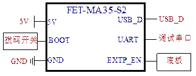
Please refer to “Appendix IV. for the minimal system schematic diagram However, in most cases, it is recommended to connect some external devices in addition to the minimal system, such as a debugging serial port, image flashing port, otherwise, users can not check whether the system is booted. After completing these steps, additional user-specific functions can be added based on the default interface definitions provided by Forlinx for the SoM.
Please refer to section 3.5 in “Chapter 3. OK-MA35-S2 Carrier Board Description” for the peripheral circuits.
3. OK-MA35-S21 Development Platform Description
3.1 OK-MA35-S21 Development Board Interface Diagram
The connection of OK-MA35-S21 SoM and the carrier board is edging connection +LGA, and the main interfaces are as follows:
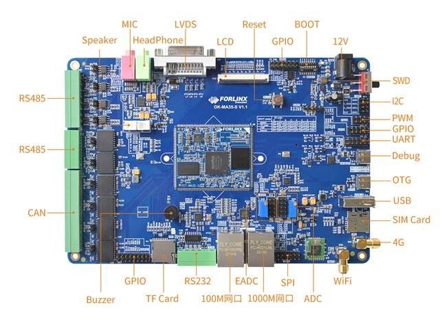
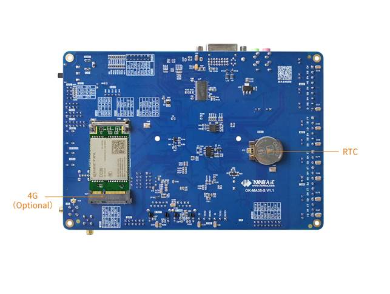
3.2 OK-MA35-S21 SoM Dimension Diagram
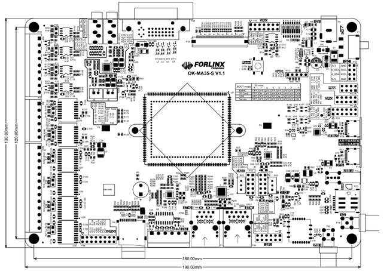
PCB Size: 130mm × 190mm
Fixed hole size: spacing: 120mm × 180mm, hole diameter: 3.2mm.
Plate making process: thickness 1.6mm, 4-layer PCB.
Power supply voltage: DC 12V.
Two mounting holes with a diameter of 3.2mm are reserved on the carrier board. You can select and install the heat sink according to the site environment. Please add a layer of insulated heat-conducting silicone pad on the contact surface between the heat sink and the core board. 38Mm×38mm×10mm. For more detailed dimensions, please refer to the following figure.
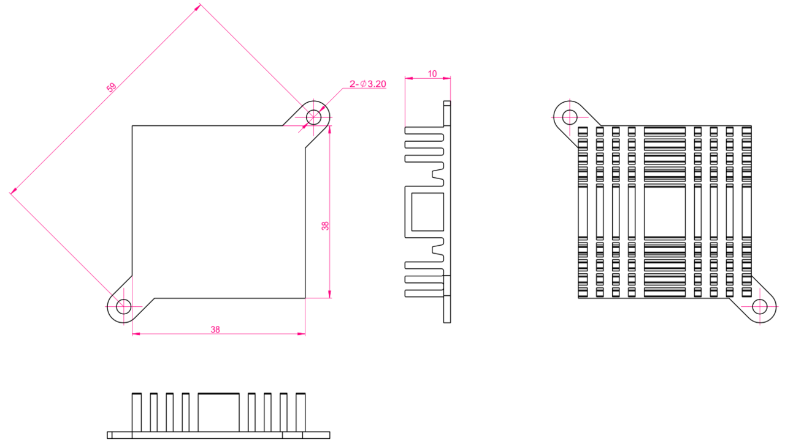
3.3 Carrier Board Naming Rules
ABC-D+IK:M
Field |
Field Description |
Value |
Description |
|---|---|---|---|
A |
Qualification level |
PC |
Prototype Sample |
Blank |
Mass Production |
||
B |
Product line identification |
OK |
Forlinx Embedded development board |
C |
CPU Name |
MA35 |
MA35 |
- |
Segment Identification |
- |
|
D |
Connection |
Sx |
Edge Connector |
+ |
Segment Identification |
+ |
The configuration parameter section follows this identifier. |
I |
Operating temperature |
I |
-40 to 85℃ Industrial-grade |
K |
PCB Version |
11 |
V1.1 |
xx |
Vx.x |
||
:M |
Internal Identification of the Manufacturer |
:X |
This is the internal identification of the manufacturer and has no impact on the use. |
3.4 Carrier Board Resources
Function** |
Quantity |
Parameter |
|---|---|---|
USB 2.0 |
2 |
1 x USB HOST led out via USB Type A socket; 1 x USB OTG led out via USB Type-C socket, only used as a Device |
LCD |
1 |
Supports RGB 888, maximum resolution 1920 * 1080@ 60fps |
LVDS |
1 |
Converted through LCD and extended via DVI-I socket |
Ethernet |
2 |
1 Gigabit, 100 Megabit, downward adaptive rate, dual RJ45 ports can be used |
TF Card |
1 |
1 x TF Card slot, compatible with SD3.0 |
4G |
1 |
Supports 4G module via a mini PCIe interface |
WiFi |
1 |
RL-UM02WBS-8723DU-V1.2 Standard: IEEE 802.11b/g/n, BT V2.1/BT V3.0/BT V4.0. |
Bluetooth |
1 |
Bluetooth |
Audio |
1 |
Default on-board NAU88C22YG chip; supports headphone output and MIC |
I2C |
4 |
2 x for mounting carrier board LCD touch and audio；2 x led out via 2 X 4 |
PWM |
7 |
2 for LCD backlight brightness adjustment and BUZZER respectively, and 5 |
RTC |
1 |
On-board independent RTC chip, which can record time via a button battery when the carrier board is powered off |
UART |
3 |
2 x 6Pin 2.54mm spacing header pins for mounting external devices |
RS485 |
6 |
Galvanic isolation, controlled via GPIO for transmit and receive direction |
CAN |
4 |
Electrical quarantine supporting CAN-FD, speed up to 5Mbps |
SPI |
2 |
2 x 6Pin 2.54mm pitch for mounting external devices |
QSPI |
1 |
On-board 16MB QSPI NOR FLASH |
DEBUG UART |
2 |
A-core UART0 and M-core UART16 are converted into USB signals, which are led out through the Type-C interface. The default baud rate is 115200. |
ADC |
8 |
8 x single-ended inputs, 12 bit, 500K SPS, 4-wire or 5-wire touch |
EADC |
8 |
8 x single-ended or 4 x differential inputs, 12 bit, 4.7 M SPS |
KEY |
1 |
Reset key |
SWD |
1 |
1 x 5Pin single-row 2.54mm pitch for exporting |
Note: The parameters in the table are the theoretical values of hardware design or CPU.
3.5 OK-MA35-S21 Carrier Board Description
Note: The component UID with “_DNP” mark in the diagram below represents it is not soldered by default. The schematic diagrams in this manual are only for interface description. When users conduct hardware design, please refer to the source file materials.
3.5.1 Carrier Board Power
It uses a 12V power adapter for the power supply, and the power connector is a DC005 socket. S1(dip switch) is the power switch, which moves according to the screen printing indication on the board. The rear of S1 has TVS for electrostatic protection, F1 for over-current protection, and D1 and F1 cooperate for anti-reverse connection protection.
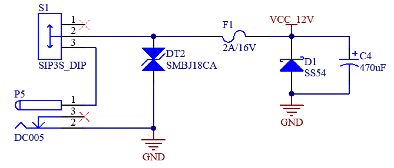
VCC_12V is stepped down to DCIN (5V) through U1. DCIN directly powers the SoM to ensure that it can be powered on first.
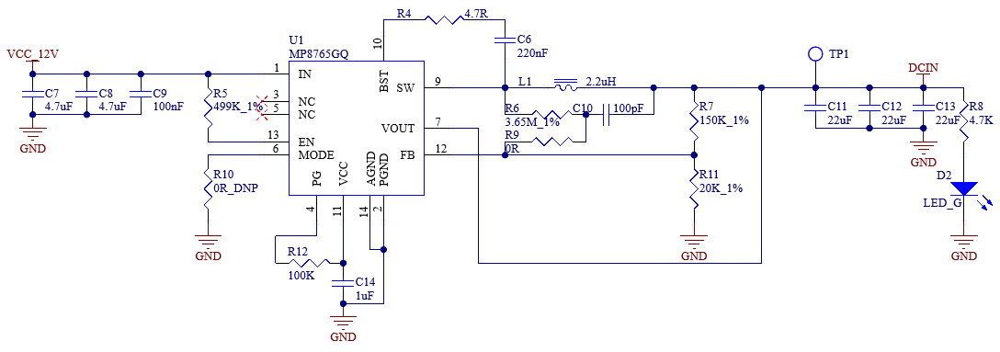
DCIN (5V) outputs VCC_5V in a controlled manner through U2. U2 is controlled by EXTP_EN. After the SoM is powered on, U2 is turned on VCC_5V powers some 5V - powered devices on the carrier board.
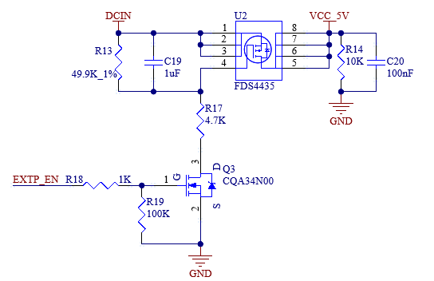
VCC_5V is stepped down to VCC_3V3 through U6 to power all 3.3V - powered devices on the carrier board.
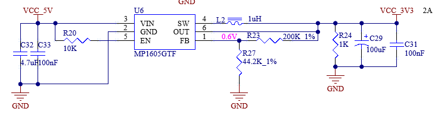
Note:
When designing independently, it is essential to ensure the power - on sequence of the power supply. Specifically, the EXTP_EN output from the SoM should be used as the enable signal for the DCDC power supply of the carrier board, so as to ensure that the SoM is powered on first and the carrier board is powered on later;
Refer to the corresponding chip manual for the component selection and external layout of the step-up and step-down chip to ensure a good power circuit.
3.5.3 BOOT Configuration
The carrier board uses an 8-bit DIP switch S2 to select the system boot mode. Please adjust the options before powering up the development board.
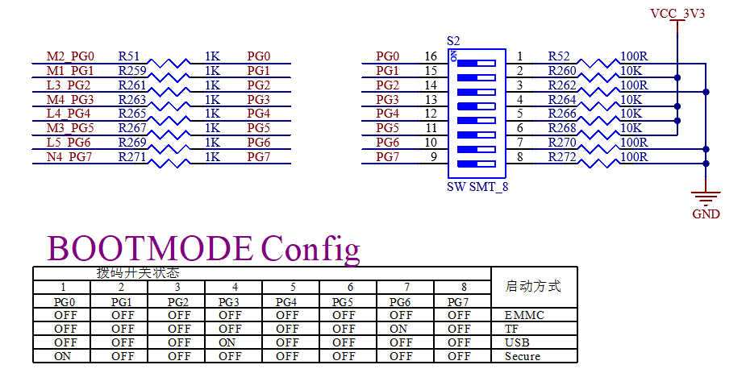
Boot mode:
eMMC: The development board program starts from the on - board eMMC of the SoM.
TF: The development board uses a TF card to boot the system. You can use this method to flash an image to the TF card.
USB: Generally, it is used for OTG to download images. The development board is connected to the computer’s USB port via a USB Type - C adapter cable at the P11 interface. You can use the program on the computer to flash an image to the development board.
Secure is secure boot, which ensures the authenticity and integrity of the system image and prevents the execution of malicious or unauthorized software implanted in the system. Currently, this function is disabled by default.
Note：
PG0 - PG7 are pins related to startup. These pins are pulled down by default inside the CPU. Meanwhile, the PG0, PG2, PG6, and PG7 pins on the SoM are pulled up with 10K resistors;
Currently, the secure boot function is disabled by default, and the system can be started from the eMMC when only powered on. Please handle the relevant pins on the carrier board according to the flashing and startup situations;
Since these pins are related to startup, it is not recommended to use them as GPIO. If they need to be used as GPIO, pay attention to the pin levels to avoid affecting the startup items.
3.5.4 Debugging Serial Port
There are two debug serial ports on the SoM. UART0 is used for A35 debugging, and UART16 is used for M4 debugging.
To facilitate users, the two debug serial ports are integrated into one USB interface using the USB - to - serial chip CH342F.
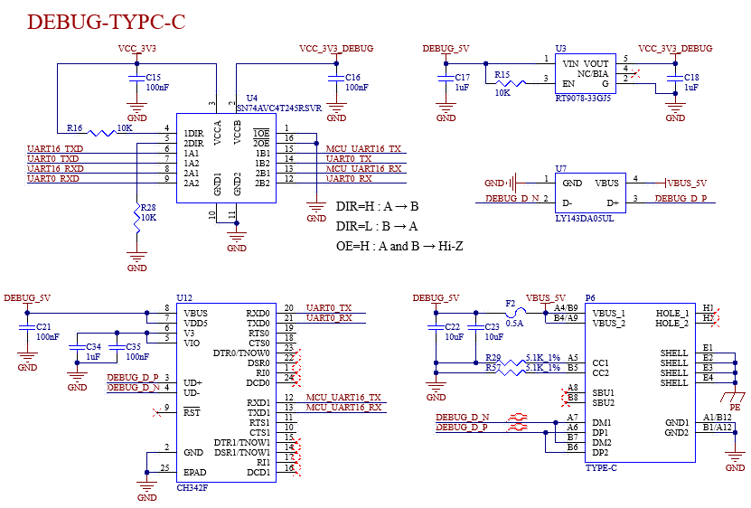
To use the debug serial ports, first install the CH342F driver on your computer. The driver download links are: http://www.wch.cn/products/CH342.html
Then connect the P6 port of the development board to the computer’s USB port using a USB - to - Type - C cable. Two COM ports will be generated in the computer’s Device Manager. Among them, Port A is the A35 debug serial port, and Port B is the M4 debug serial port.
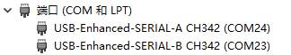
Open a debug terminal tool on the computer, such as Putty. Set the baud rate to 115200, the data bits to 8, no parity bit, and the stop bits to 1. Select the correct COM port, power on the development board, and you can see the debug serial port information.
Note：
To facilitate later debugging, please lead out these debug serial ports when users design the carrier board by themselves；
The debug serial ports on the carrier board are designed to prevent electric leakage. It is recommended that users refer to this design.
3.5.5 TF Card
The TF Card on the development board uses the SD0 channel of the CPU.
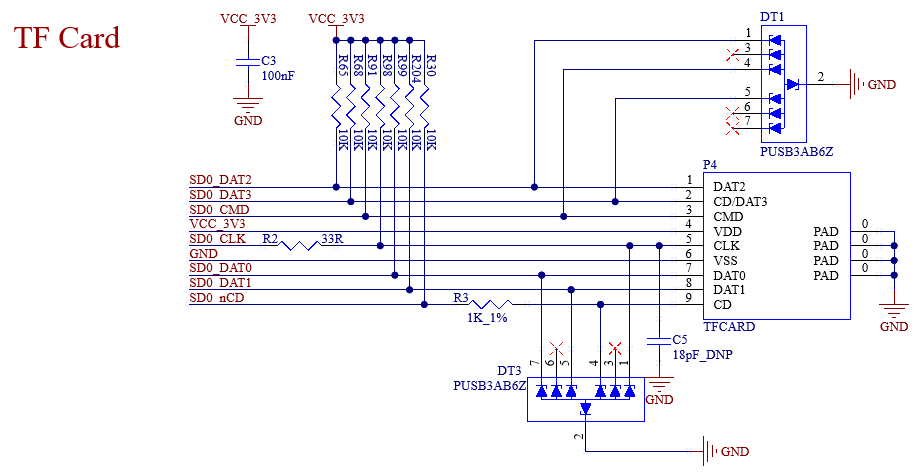
Note: It is strongly recommended to reserve pull - up resistors on the bus; otherwise, it may affect the flashing of the TF card. It is recommended to reserve a series resistor and a capacitor to ground for the SD0_CLK pin. The capacitor is left un - soldered by default. Since the TF card is a hot - swappable device, ESD protection should be provided. SD signals must be length-matched.
3.5.6 USB OTG Interfaces
The carrier board supports USB flashing. Currently, the development board circuit only supports the device mode. When using USB0, pay attention to the design reference of HSUSB0_VBUSVLD on the development board. When OTG_ID is high, USB0 functions as a device.
If only USB0 is used as the HOST, pull the OTG _ ID to GND, and the USB socket power supply VBUS pin needs to supply 5V power. In addition, HSUSB0 _ VBUSVLD can be used as a common IO.
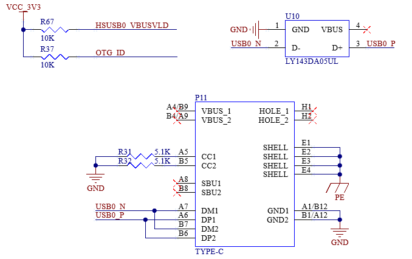
Note: Only the native USB0 of the SoM supports the USB programming system. USB data lines are required to make 90Ω differential impedance. Please select the appropriate ESD device. The HSUSB0_VBUSVLD needs to detect voltage to enable the USB function normally.
3.5.7 LCD Interface
The RGB 888 is led out from the development board through the FPC seat with 54pin and 0.5mm pitch (P23). The maximum resolution can reach 1920 * 1080 @ 60fps. It is suitable for the Forlinx 7-inch LCD.
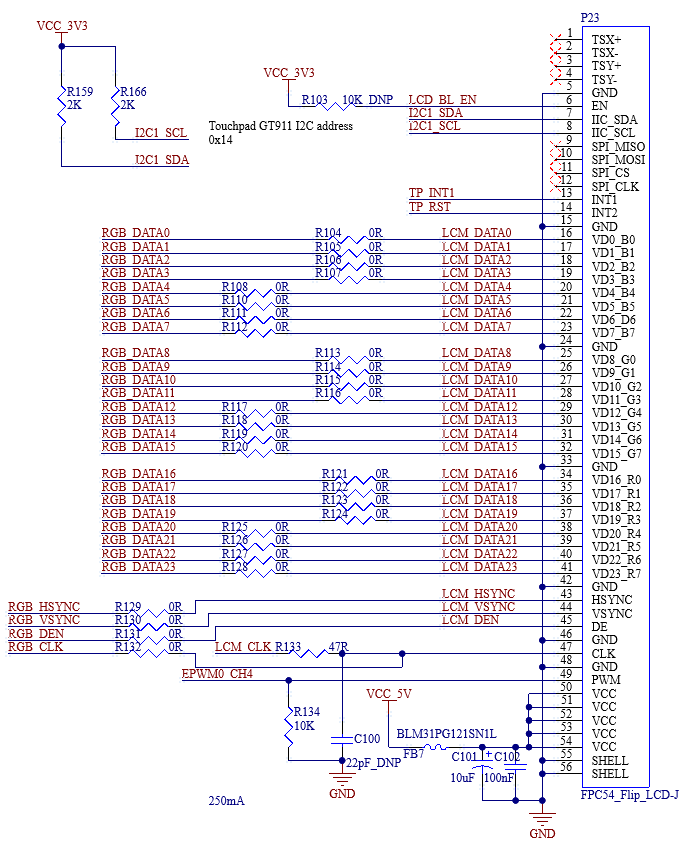
3.5.8 LVDS Interface
LVDS is converted from RGB888, and only one of them can be used.
The development board leads out the LVDS signals through a DVI - I (24 + 5 pins) socket and supports USB touch.
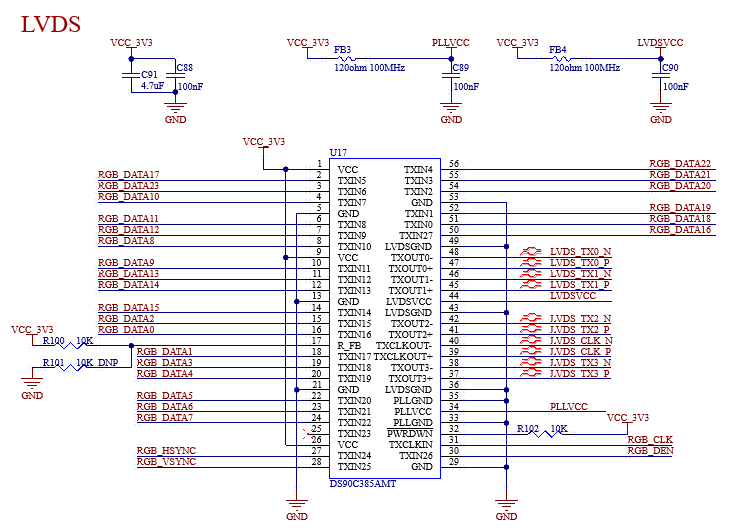
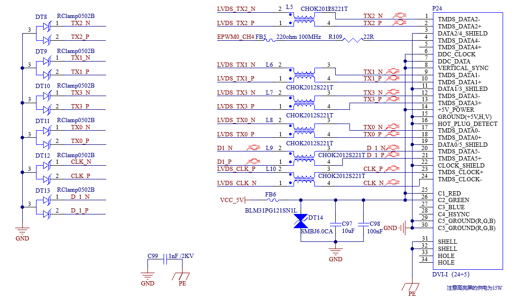
Note: The data and clock of LVDS need to have equal lengths. Impedance requirements: 50Ω for single - ended and 100Ω for differential.
3.5.9 Ethernet Interface
There are 2 x Ethernet interfaces, P46 is gigabit and P1 is 100m.
The Gigabit network port is connected to the PHY chip YT8521SH-CA (U31) via RGMII and is led out by an RJ45 socket (P46). The socket model is FC - H021LNL, which has a built - in isolation transformer.
Note:
The TX group and RX group of the RGMII signals need to have equal lengths within each group;
The RGMII and MDIO/MDC have the same level, which can be configured by CFG_LDO[1:0];
Special attention should be paid to several power supplies of YT8521SH - CA. Unstable voltage will cause the chip to malfunction;
The analog differential lines of the network need to have a differential impedance of 100Ω, and the equal - length requirement between groups should be ≤1000 mil;
It is recommended to use at least a 4 - layer board design to ensure that the traces have a complete reference plane. Otherwise, network communication will fail;
It is recommended to directly copy the schematic and PCB design of the development board for this part.
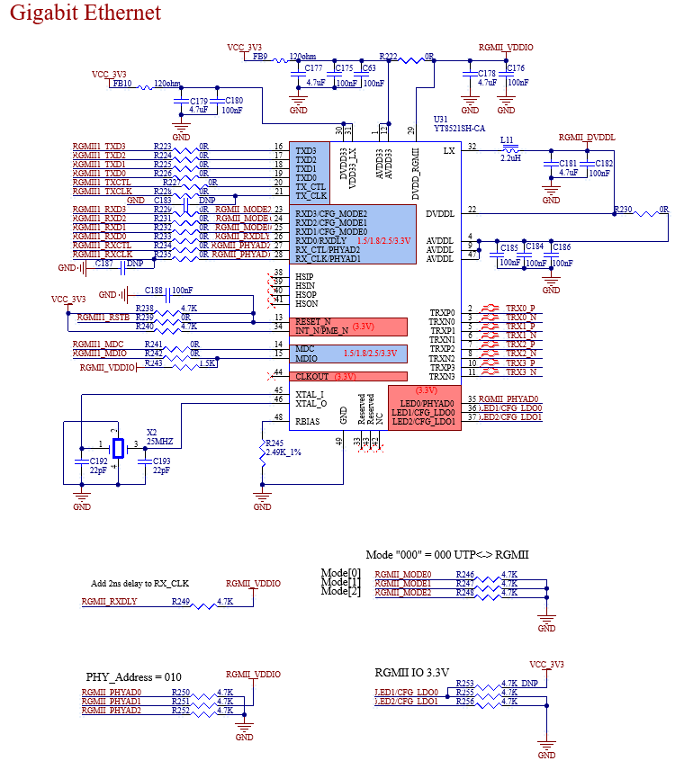
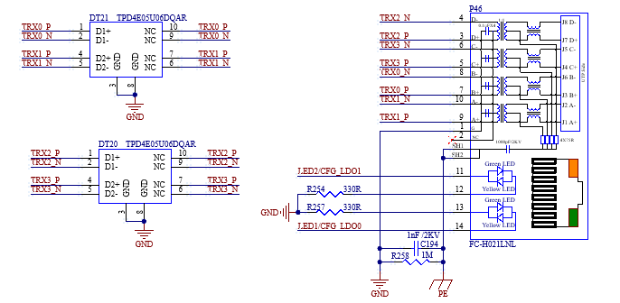
The 100m Ethernet port is connected to the PHY chip IP101GRI (U32) through RMII, and is led out from the RJ45 socket (P1). The socket model is FC-SH105GYNL, and the quarantine transformer is built in.
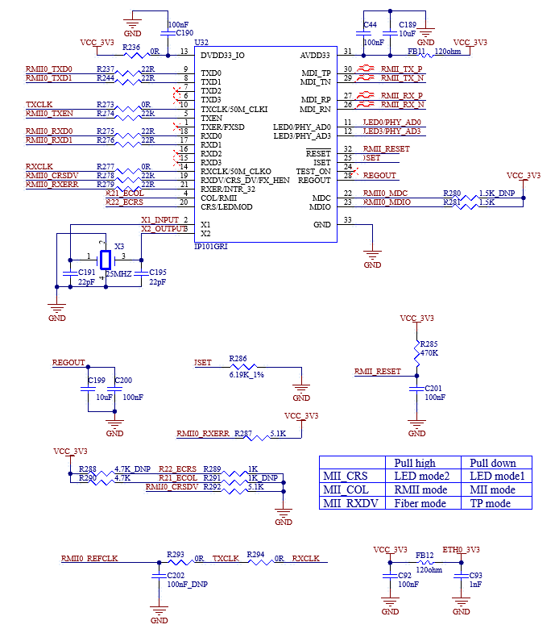
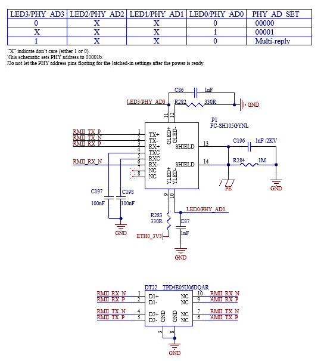
3.5.10 USB HOST Interface
The development board uses a USB2.0 HUB (FE1.1s - BQFN24BT) to expand the native USB2.0 port of the CPU into 4 x USB2.0. One of them is led out through a USB2.0 Type - A socket (P16), and the other 3 x are connected to WiFi & Bluetooth, miniPCIE, and LVDS respectively.
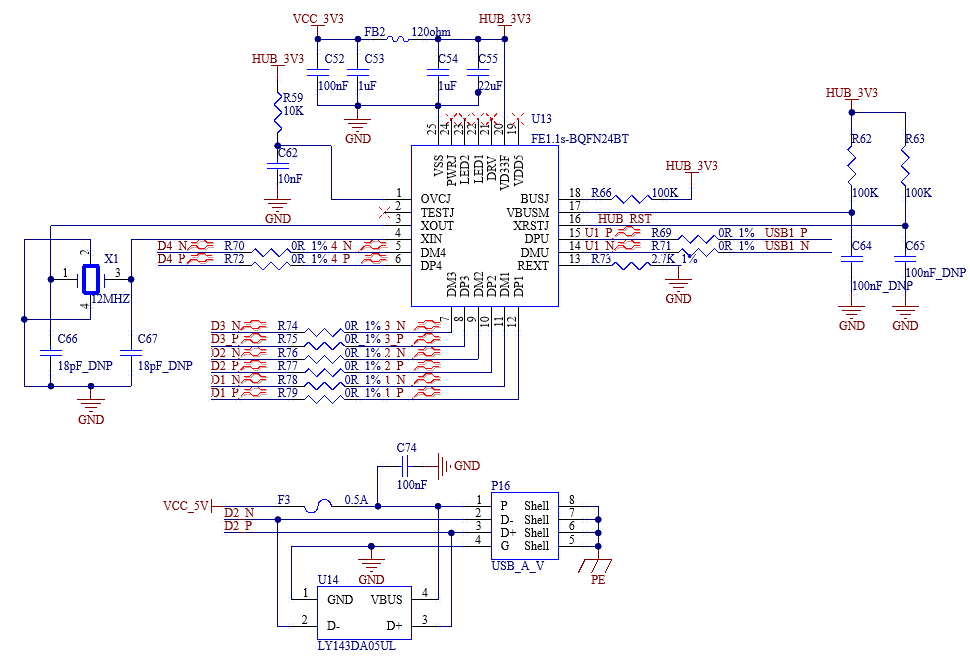
Note：
USB data lines are required to make 90Ω differential impedance;
Please select the appropriate ESD device.
3.5.11 WiFi&Bluetooth
The model of WiFi Bluetooth 2-in-1 module is: BL-M8723DU1, standard: IEEE802.11b/G/n, Bluetooth standard: TV 2.1/BTV3.0/BTV4.0.
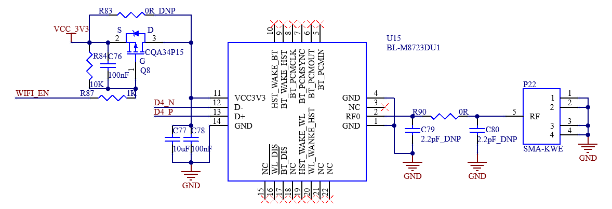
In the schematic diagram, the WIFI_EN pin is the power switch pin of the module. When it outputs a low level, the module is powered.
The antenna interface is at the lower - right corner of the front side of the PCB. P22 is the WIFI antenna, which can send and receive data.
3.5.12 4G
The development board supports 4G modules using the miniPCIE socket. By default, the Quectel EC20 is used.
It uses a MicroSIM card. Please pay attention to the card insertion direction.
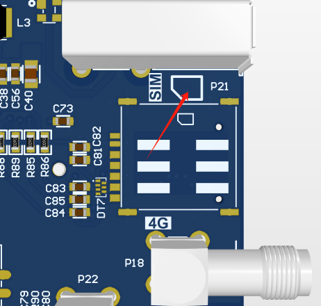
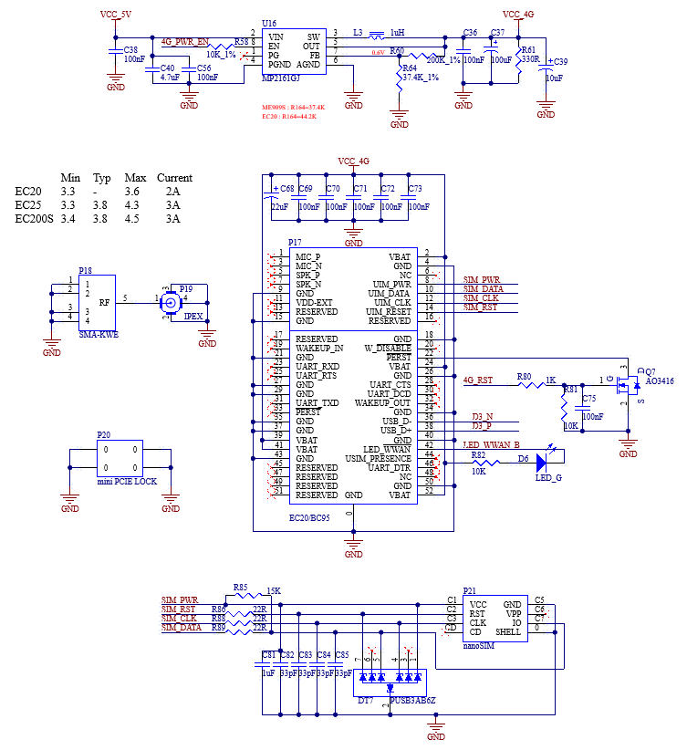
3.5.13 Audio
The development board mounts the NAU88C22YG chip through I2S0, providing a standard 3.5mm audio socket (P43, green) and a standard 3.5mm microphone socket (P42, pink). The NAU88C22YG has a built - in Class D power amplifier. The output is led out through two XH2.54 - 2P white sockets, P38 and P40, which can drive two 8Ω speakers with a maximum output power of 1W. If you need to connect an external larger power amplifier, you can only obtain the signal from the headphone socket, not from the speaker interface. The output power of the on - chip headphone driver is 40mW (16Ω). The power supply of the audio chip is controlled by CODEC_PWR_EN, and it is enabled at a high level.

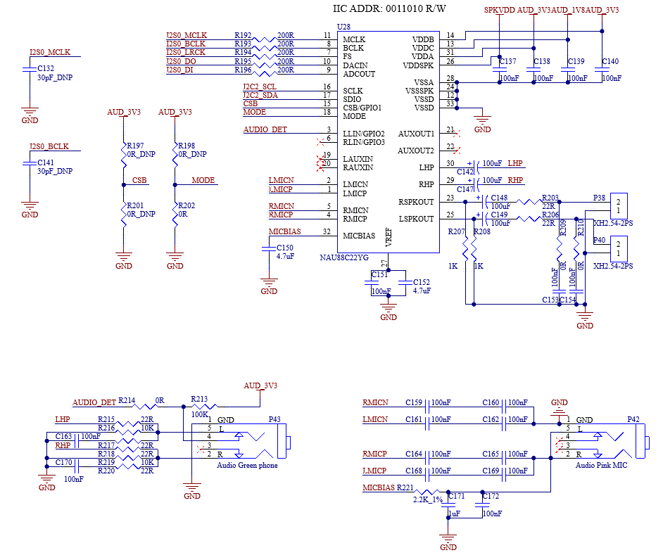
Note：
The power of the speaker comes from a class-D power amplifier, not a traditional analog power amplifier;
**NAU88C22YG chip is divided into a digital area and an analog area, and please pay attention to the device layout when designing the carrier board by yourselves; **
Please clean power supply of the chip, which is helpful to reduce the audio noise.
3.5.14 CAN
The development board provides 4 x CAN supporting CAN-FD. The 2pin-2.54mm is used to connect short - circuit jumper caps, which are for the 120Ω termination resistors on the CAN bus. The 0R resistors (with empty soldering pads) connected in parallel with the pins are a reserved design. Users with stability requirements can solder these resistors instead of using the jumper caps.
The connection is led out through the P44 terminal block. It is recommended to connect the devices to a common ground when using CAN communication.
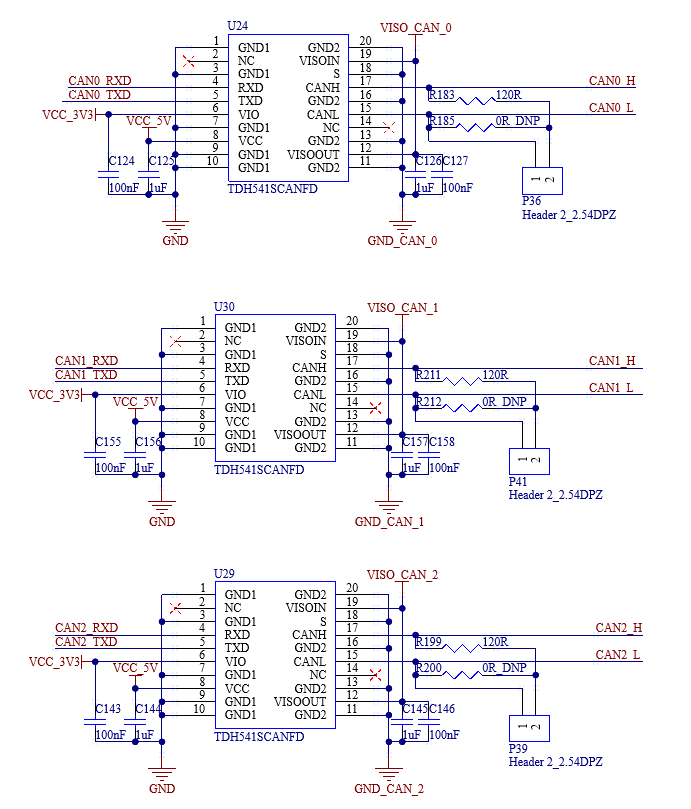
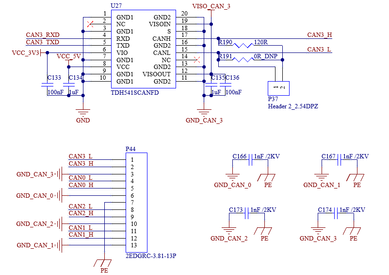
3.5.15 RS485
The development board provides 6 x RS485. The 2pin-2.54mm is used to connect short - circuit jumper caps, which are for the 120Ω termination resistors on the RS485 bus. The 0R resistors (with empty soldering pads) connected in parallel with the pins are a reserved design. Users with stability requirements can solder these resistors instead of using the jumper caps.
The connection is led out through the P29 terminal block. It is recommended to connect the devices to a common ground when using RS485 communication.
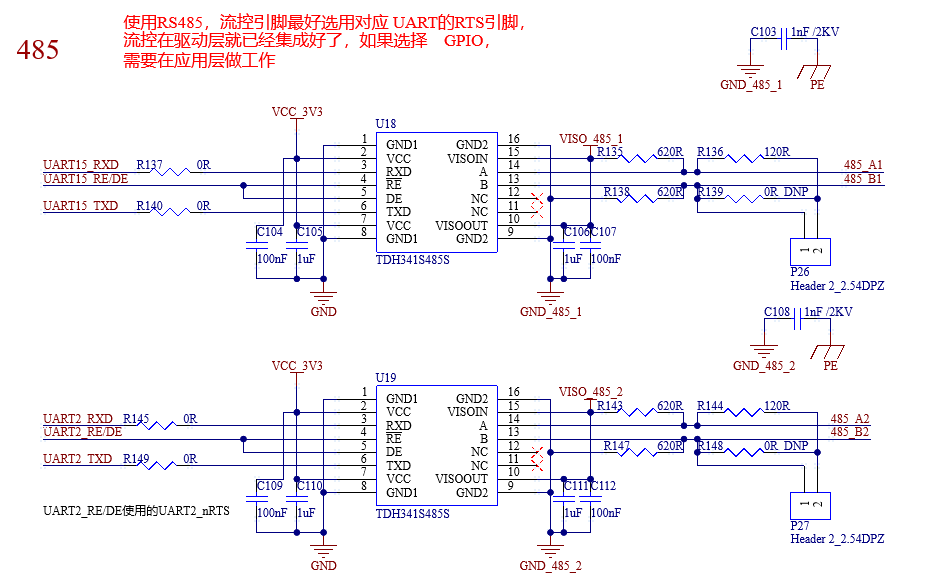
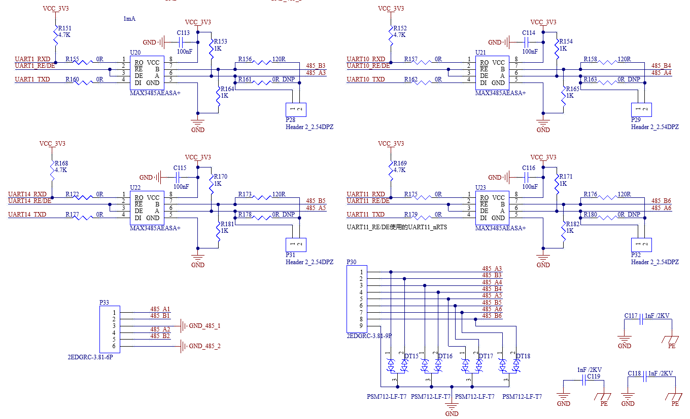
Note：
The MAX3485AEASA+ requires manual control of the send - receive direction. It is advisable to select the RTS pin corresponding to the UART as the flow - control pin. The flow control has already been integrated at the driver level. If a GPIO is selected, work needs to be done at the application layer;
On the development board, the flow - control pins of UART2 and UART11 use the corresponding RTS pins of the serial ports, while the flow - control pins of UART1, UART10, UART14, and UART15 use GPIO.
3.5.16 General Serial Ports
Three general serial ports, each at 3.3V, are led out from the carrier board using 2*6pin-2.54mm for users to connect external devices.
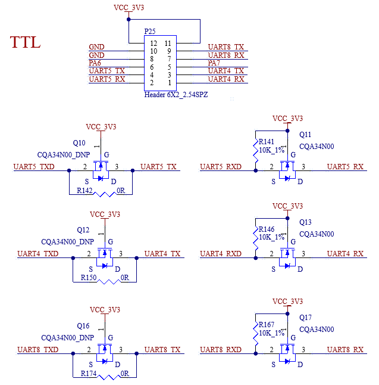
3.5.17 SWD Interface
SWD interface led out from the carrier board through P13 with a pin pitch of 2.54mm. If this function is not used, simply leave these pins floating.
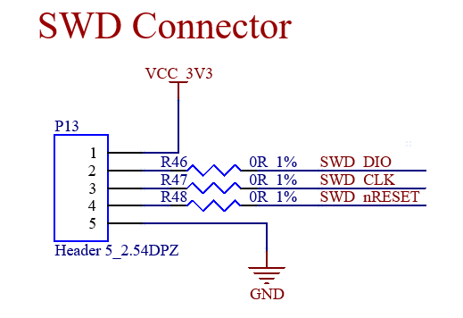
3.5.18 RTC
The carrier board is externally provided with RTC equipment through I2C2, and is supplied with power through D4 compatible with VCC _ 3V3 and the button cell. After the carrier board is powered off, the button cell can maintain power supply for the RTC chip. The hardware is designed to be compatible with both RX8010SJ and PCF8563T/5.
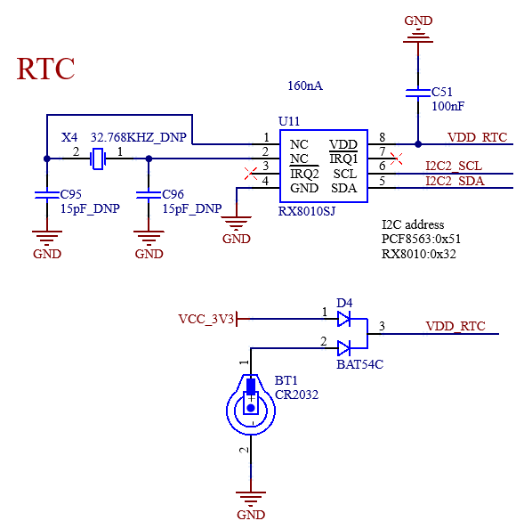
Note: When using the on - board RTC function of the SoM, a 3.3V power supply needs to be provided at the VBAT (166) pin, and this power supply should remain available even after power - off.
3.5.19 SPI
The development board provides 2 x SPI , which are led out through P9 using 2*6pin-2.54mm for users to connect external devices.
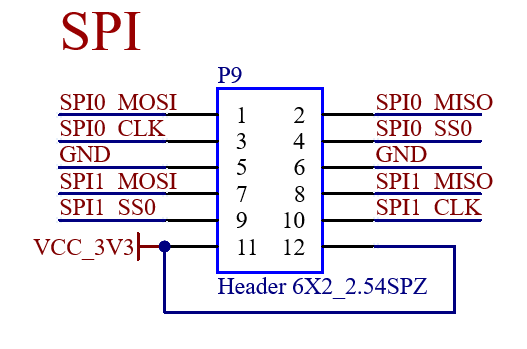
3.5.20 ADC
There are 8 x ADC on the development board, which is demonstrated using variable resistors. The ADC voltage sampling range is 0 - 3.3V, supporting 12 - bit resolution and 500K SPS.
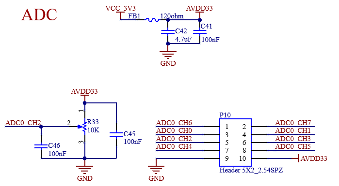
3.5.21 EADC
There are 8 x EADC on the development board, which is demonstrated using variable resistors. The ADC voltage sampling range is 0 - 3.3V, supporting 12bit resolution and 4.7M SPS.
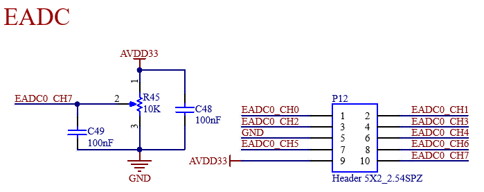
3.5.22 BUZZER
The development board is designed with 1 x buzzer, controlled by EPWM. Users can customize its functions.
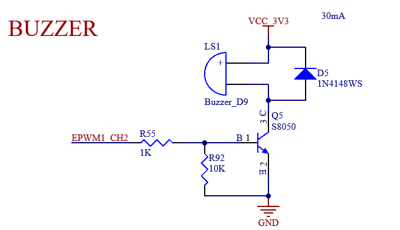
3.5.23 QSPI NorFlash
The baseboard has an on - board QSPI_NorFlash.
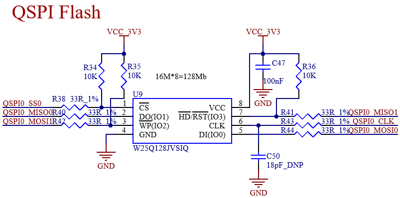
3.5.24 EPWM
Five EPWM signals with a level of 3.3V are led out from the carrier board using 2*4pin-2.54mm . Users can customize their functions.
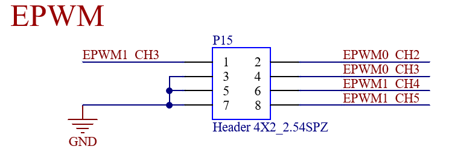
3.5.25 GPIO
Some GPIO are led out with a level of 3.3V, using headers with a 2.54mm pitch. Users can customize their functions. When taking power from the headers during debugging, pay attention to the voltage level.
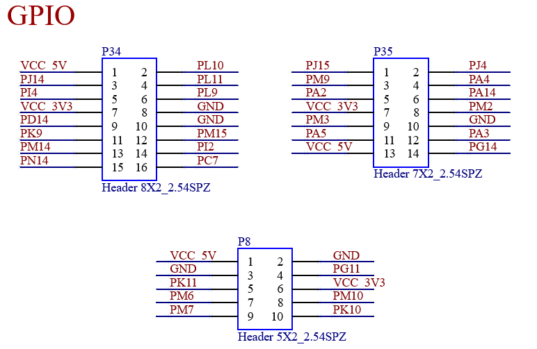
4. Hardware Design Guide
**1. I2C requirements **
**Multiple slave devices can be mounted on a set of I2C buses, please ensure that there are no address conflicts; **
**A pull-up resistor needs to be added to the I2C bus, but do not use multiple resistors for pull-up; **
Please pay attention to level matching between the I2C on the SoM and the I2C on the slave device.
2. VBAT pin processing
When using the RTC function on the SoM, a 3.3V power supply must be provided at the VBAT pin, and this power supply can be maintained when it is powered off.
3. Power-up sequence
It is strongly recommended that users use the EXTP_EN output from the SoM as the power on enable when designing the carrier board, and strictly control the power on timing. Or it may have the following influences:
·Excessive current during the power on stage;
·The device cannot start;
·The worst-case scenario is irreversible damage to the processor.
4. The unused signal pins of the SoM can be left floating, but please make sure to connect all the GND pins;
5. Explanation on the Issue of pin IO Leakage
Before the SoM is powered on, if there is a high - level in - flowing current on the signal pins of the SoM, it will cause electrical leakage to the SoM. The most obvious phenomenon is that the red indicator light on the SoM can be seen slightly lit. This will lead to an incorrect power - on sequence. The most typical case is serial port leakage. Therefore, the peripheral parts directly connected to the CPU need to be designed with anti - leakage measures.
6. Requirements for the Startup - related Pins PG0 - PG7
PG0 - PG7 are startup - related pins. These pins are pulled down by default inside the CPU. Meanwhile, on the SoM, the pins PG0, PG2, PG6, and PG7 are pulled up with a 10K resistor. By default, the secureboot function is disabled, and the system can be started from the eMMC when only power is supplied. Please handle the relevant pins on the carrier board according to the flashing and startup situations. In addition, these pins are not recommended to be used as GPIO because they are related to startup. If they are used as GPIO, pay attention to the pin level and do not affect the startup item.
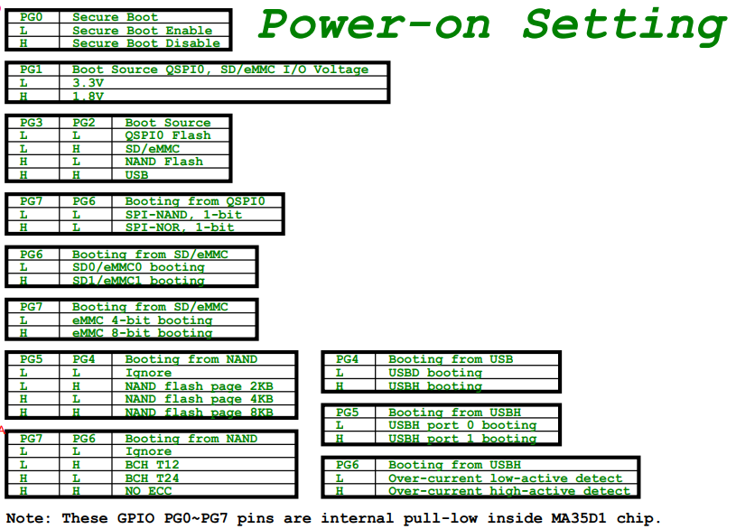
7. Debug Serial Port Hardware Design Instructions
UART0 serves as the debug serial port for the A - core. To facilitate later debugging, it is recommended to lead it out and take proper anti - leakage measures. If the M - core is used, UART16_TXD needs to be led out for debugging convenience. 8. SD Card Hardware Design Requirements
All signal lines of the SD card need to be pulled up to 3.3V through resistors. Otherwise, it may affect the SD card programming. For the SD0_CLK pin, it is recommended to reserve a series resistor and a capacitor to ground, and the capacitor is left un - soldered by default. 9. Requirements for the HSUSB0_VBUSVLD Pin
The D6_PF15 pin is set to the HSUSB0_VBUSVLD function by default. When USB0 is used as a device, this pin must be kept at a high level, such as during programming via USB0. If USB0 is used as a host, this pin can be used as a GPIO. 10. T13_PJ5 Pin Requirements
The T13_PJ5 pin needs to be pulled down with a 10K resistor. Pulling up this pin is prohibited, otherwise, it will affect the normal startup of the eMMC. 11. RS485 Requirements
When using RS485, it is recommended to select the RTS pin of the corresponding UART as the flow - control pin. The flow control has already been integrated at the driver layer. If a GPIO is selected, work needs to be done at the application layer. 12. ADC/EADC Requirements
The default input range of ADC0 - 7 and EADC0 - 7 is 0 - 3.3V. Attention should be paid to the input voltage range. 13. PCB Layout Requirements for Self - Made Carrier Board
To ensure the solder climbing yield of the stamp holes on the SoM, when manufacturing the stencil for the carrier below:, the opening area of the stamp holes is expanded to ensure the amount of solder paste, as shown in the gray part in the following figure. Therefore, when laying out the carrier board, it is necessary to ensure that the pads of other components are kept away from the enlarged area of the SoM stencil. Meanwhile, no holes are allowed to be drilled in the enlarged area of the SoM stencil to prevent solder leakage, which may affect the soldering quality.
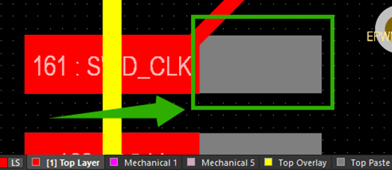
14. Surface Treatment Process Requirements for Self - Made Carrier Board PCB
It is recommended to use the electroless nickel immersion gold (ENIG) process for the surface treatment of the carrier board. Since the SoM and the carrier board are connected by stamp holes + LGA, using the ENIG process can reduce the soldering difficulty after the carrier board is stored separately. It is strongly recommended to send the SoM and the SMD components on the carrier board to the pick - and - place machine for soldering simultaneously. If the carrier board has components on both sides, it is recommended that the side with the SoM pass through the reflow oven last to avoid the SoM passing through the oven twice on the baseboard. 15. Stencil Requirements for Self - Made Carrier Board
Inform the factory that the stencil for the SoM area does not need to be processed as the compensation has already been done, and other areas can be modified.
e.g.:
16. SoM Vibration - Resistance Requirements
If the your product has vibration - resistance requirements, it is recommended to add a rigid connection between the area where the SoM is located and the housing to avoid deformation of the area where the SoM is located during vibration. This can prevent the solder joints from breaking due to stress fatigue, which could otherwise affect the stable operation of the product.
5. OK-MA35-S21 Development Board Linux System Power Consumption Table
No. |
Test Item |
SoM Power (W) |
Development Board Power (including SoM) (W) |
|---|---|---|---|
1 |
No-load starting peak power |
2.21W |
3.7W |
2 |
CPU Stress + Memory + eMMC Read/Write Stress Test |
2.06W |
4.55W |
3 |
On-board LVDS + 4G + video encoding |
2.02W |
5.03W |
4 |
On-board LVDS + 4G + video encoding + CPU stress + memory + eMMC read/write stress test |
2.56W |
5.56W |
Note：
Peak current: the maximum current value during startup;
Stable Value: Current value stays on the boot screen after booting;
Power consumption is for reference only.
6. Minimum System Schematic
The minimum system includes the SoM, power supply, debugging serial port, system image flashing interface, and boot startup circuits.
The above figure is only a schematic diagram. Please refer to the schematic diagram of the source file for the specific connection. In order to meet the normal operation of the SoM, in addition to the power supply VDD5V, HSUSB0 is also required to facilitate the system flashing; UART0 circuit is convenient to confirm whether the system works normally and to facilitate debugging; BOOT circuit is used to start the system.